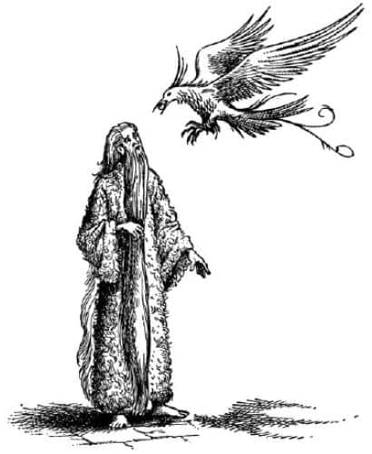
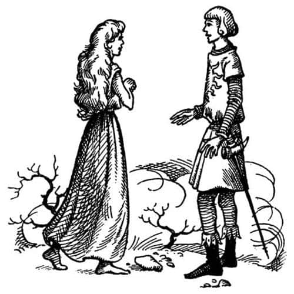

Dünyanın Sonunun Başlangıcı
Kapı tekrar yavaşça açıldı ve kız kadar uzun ve düzgün ancak onun kadar narin olmayan bir şekil dışarıya çıktı. Elinde mum ya da benzer bir şey yoktu ama ışık saçıyor gibi görünüyordu. Yaklaştıkça, Lucy onun yaşlı bir adam olduğunu anladı. Gümüş rengi sakalları, çıplak ayaklarına kadar uzanıyordu, gümüş rengi saçları sırtından topuklarına iniyordu ve giysisi gümüş kuzuların postundan yapılmış gibi görünüyordu. Öylesine soylu ve ciddi görünüyordu ki, tüm gezginlerimiz ayağa kalkıp sessizce dikildiler.
Ne var ki, yaşlı adam, gezginlerle konuşmadan geldi ve kızının karşısında masanın diğer yanında durdu. Sonra ikisi de kollarını kaldırdı ve yüzlerini doğuya dönüp şarkı söylemeye başladılar. Şarkının sözlerini yazabilseydim keşke, ne var ki orada bulunan hiç kimse hatırlayamıyordu. Lucy sonradan bunun çok yüksek sesli, çok tiz, ama çok güzel, “Sabahın erken saatlerinde söylenen türden bir şarkı” olduğunu söyledi. Onlar söyledikçe doğudaki bulutlar dağıldı ve gökyüzü her yer aydınlanana kadar açıldı, deniz gümüş gibi parlamaya başladı. Çok sonradan (şarkı söylemeye devam ediyorlardı) doğuda gökyüzü kızarmaya başladı, sonunda güneş bulutsuz gökyüzünde göründü ve ışınları masa boyunca altınlara, gümüşlere ve hançere vurdu.
Narnialılar daha önce de bir ya da iki kez, güneşin bu denizlerde doğarken evdekinden daha büyük görünüp görünmediğini merak etmişlerdi. Artık emindiler. Yanılmalarına imkân yoktu. Masada ve yerde oluşan çiy parıltısı, daha önce gördükleri tüm sabah aydınlığının çok ötesindeydi. Sonraları Edmund’un da dediği gibi, “O yolculukta çok heyecan verici gibi görünen birçok şey olsa da, en heyecan verici an, o andı.” Çünkü artık gerçekten Dünyanın Sonu’nun başlangıcında olduklarını biliyorlardı.
Doğan güneşin tam ortasından onlara doğru bir şey uçuyormuş gibi göründü, kimse emin olmak için gözünü güneşten tarafa dikemedi. Az sonra etrafı bir sestir aldı; kız ve babasının söylediği şarkıya eşlik eden seslerdi bunlar, fakat çok daha çılgınca tonlarda ve kimsenin bilmediği bir dildeydi. Az sonra seslerin sahipleri görünür oldu. Büyük ve beyaz kuşlardı bunlar ve yüzlercesi, binlercesi gökten kar gibi yağıp çimlere, döşeme taşlarına, masaya, omuzlarına, ellerine, başlarına kondu. Her şeyi kar gibi beyazla kaplamakla kalmayıp tüm şekilleri belirsizleştirdiler, bulanıklaştırdılar. Lucy her yeri kaplayan kuşların kanatları arasından baktığında, bir kuşun gagasında küçük bir meyveye benzeyen bir şeyle – bir köz parçası da olabilir fakat bakılamayacak kadar parlaktı – yaşlı adama doğru uçtuğunu gördü, kuş gagasındakini yaşlı adamın ağzına koydu.

Kuşlar şarkı söylemeyi bıraktı ve masanın etrafında oyalanmaya başladılar. Masadan havalandıklarında masanın üzerindeki yenilir ve içilir her şey kaybolmuştu. Kemikleri ve deniz kabuğu gibi şeyleri de yanlarına alıp güneşe uçtular. Artık şarkı söylemiyorlardı ama kanatlarının çıkardığı ses tüm gökyüzünü titretiyordu. Geride, gagalarıyla temizledikleri bomboş bir masa ve hâlâ derin derin uyuyan Narnialı üç lord kalmıştı.
Sonunda yaşlı adam gezginlere döndü ve “Hoş geldiniz” dedi.
“Efendim” dedi Caspian, “Bu üç Narnialı lordu uykuda tutan büyüyü nasıl bozacağımızı söyler misiniz?”
“Memnuniyetle, oğlum” dedi yaşlı adam. “Bu büyüyü bozmak için Dünyanın Sonu’na ya da gidebildiğiniz kadar yakınına gitmeniz ve arkadaşlarınızdan birini orada bırakarak dönmeniz gerekiyor.”
“Kalana ne olacak?” diye sordu Bastıbacak.
“O doğuya gitmeli ve asla geri dönmemeli.”
“Bu en büyük arzum” dedi Bastıbacak.
“Şimdi Dünyanın Sonu’nun yakınında mıyız, efendim?” diye sordu Caspian. “Buranın doğusundaki denizler ve karalar hakkında bir bilginiz var mı?”
“Uzun zaman önce görmüştüm” dedi yaşlı adam, “fakat çok yüksekten bakmıştım. Denizcilerin işine yarayacak şeyler anlatamam sana.”
“Uçtuğunuzu mu söylemek istiyorsunuz?” diye ağzından kaçırdı Eustace.
“Çok yükseklerdeydim, oğlum” diye cevapladı yaşlı adam. “İsmim Ramandu. Şaşkınlıkla birbirinize bakmanızdan daha önce bu ismi duymadığınızı anlıyorum. Buna şaşırmıyorum, çünkü benim bir yıldız olduğum günler, sizlerin bu dünyaya gelmenizden ve tüm takımyıldızlarının değişmesinden çok uzun zaman önce sona ermişti.”
“Vay canına” dedi Edmund yarım ağızla, “emekliye ayrılmış bir yıldız.”
“Artık yıldız değil misiniz?” diye sordu Lucy.
“Ben dinlenen bir yıldızım, kızım” diye cevapladı Ramandu. “Sizin tahmin edebileceğinizin de ötesinde yıpranmış ve yaşlanmış halde son kez battığımda bu adaya getirildim. Şu an o zamanki kadar yaşlı değilim. Her sabah bir kuş güneşteki vadilerden bana bir ateş böğürtleni getirir ve her böğürtlen yaşlılığımın birazını götürür. Yeni doğmuş bir çocuk kadar gençleştiğimde tekrar doğacağım (çünkü biz dünyanın doğu kıyısındayız) ve bir kez daha büyük dansın adımlarını atacağım.”
“Bizim dünyamızda” dedi Eustace, “yıldız, gazdan oluşan dev gibi bir ateş topudur.”
“Sizin dünyanızda bile, oğlum, yıldız bu değildir, ama yıldızın yapısı öyledir. Daha önce bir yıldızla tanıştın sanırım, çünkü Coriakin’le beraber oldunuz.”
“O da mı emekli olmuş bir yıldız?” dedi Lucy.
“Şey – aynı şey değil” dedi Ramandu. “Kalınkafaları yönetmeye gönderilmesi, dinlenmesi için değildi. Buna bir tür ceza diyebilirsiniz. Her şey yolunda gitseydi, kışları güneyde binlerce yıl daha parıldayabilirdi.”
“Ne yaptı, efendim?” diye sordu Caspian.
“Oğlum” dedi Ramandu, “bir yıldızın yaptığı yanlışları bilmek senin gibi bir Âdemoğlunun işi değildir. Böyle konuşmalarla zaman kaybediyoruz. Karar verdiniz mi? Büyüyü bozmak için doğuya gidip, birini dönmemek üzere orada bırakarak geri gelecek misiniz? Yoksa batıya mı yelken açacaksınız?”
“Doğuya gideceğiz, Sör” dedi Bastıbacak, “bundan hiç kuşkumuz yok. Bu üç lordu büyüden kurtarmak araştırmamızın bir parçası.”
“Ben de aynı şeyi düşünüyorum, Bastıbacak” diye cevapladı Caspian. “Öyle olmasaydı bile, Şafak Yıldızı’nın dayanabileceği yere kadar, Dünyanın Sonu’nun yakınına gitmemek kalbimi kırardı. Sadece tayfaları düşünüyorum. Onlar yedi lordu bulmak üzere işe girdiler, Dünyanın Sonu’na ulaşmak için değil. Buradan doğuya yelken açarsak sonu, doğunun en uç noktasını bulmak için gideceğiz. Kimse ne kadar uzakta olduğunu bilmiyor. Hepsi de cesur arkadaşlar, ama bazılarının yolculuktan bezmiş olduğunun ve geminin başını tekrar Narnia’ya çevirmeyi arzuladıklarının işaretlerini görüyorum. Bilgileri ve rızaları olmadan onları daha ileriye götürebileceğimi sanmıyorum. Zavallı Lord Rhoop’u da düşünmeliyiz. O kalbi kırık bir adam.”
“Oğlum” dedi Yıldız, “istesen de, aldatılmış ya da isteksiz adamlarla Dünyanın Sonu’na yelken açmanın yararı olmaz. Büyük büyülerin bozulması böyle başarılamaz. Nereye gittiklerini ve neden gittiklerini bilmeleri gerekir. Peki o bahsettiğin kalbi kırık adam kim?”
Caspian, Ramandu’ya Rhoop’un hikâyesini anlattı.
“En çok ihtiyaç duyduğu şeyi verebilirim ona” dedi Ramandu. “Bu adada başı sonu olmayan bir uyku vardır; rüya bile görülmez bu uykuda. Diğer üçünün yanına otursun ve siz dönene kadar her şeyi unutsun.”
“Evet öyle yapalım, Caspian” dedi Lucy. “Eminim bundan çok hoşlanır.”
O an ayak sesleri ve konuşmalarla sözleri kesildi. Drinian ve gemideki diğer adamlar yaklaşıyordu. Ramandu ve kızını gördüklerinde şaşkınlıkla durakladılar; önemli insanlar oldukları belli olduğundan herkes şapkasını çıkardı. Bazı gemiciler pişmanlık dolu gözlerle boş tabaklara ve sürahilere bakıyordu.
“Kaptan” dedi Kral, Drinian’a, “Lord Rhoop’a haber götürmek üzere iki adamını Şafak Yıldızı’na gönder. Ona, geri kalan yoldaşlarının burada – rüya görmeksizin – uyuduklarını ve kendisinin de bunu yapabileceğini söylesinler.”
Caspian geride kalanlara oturmalarını söyledi ve her şeyi açıkça anlattı. Bitirdiğinde uzun bir sessizlik oldu ve ardından herkes fısıldaşmaya başladı, sonunda okçubaşı ayağa kalkıp:
“Uzun süredir bazılarımızın sormak istediği şey, Majesteleri, buradan ya da başka bir yerden dönmeye karar verdiğimizde eve nasıl geri gideceğimiz. Buraya kadar, arada sırada geçirdiğimiz sakin günler dışında, hep kuzey ve kuzeybatı rüzgârlarıyla geldik. Rüzgâr değişmezse Narnia’yı görebilme ihtimalimizin ne kadar olduğunu bilmek isterim. Bütün yol boyu kürek çekersek erzakımız yetmeyecek” dedi.
“Kara adamlarının söyleyeceği sözler bunlar” dedi Drinian. “Yaz sonları bu denizlerde sıkça esen bir batı rüzgârı vardır ve yeni yıldan sonra sürekli değişir. Batıya gitmek için bol bol rüzgâr olacak; söylenilene göre istediğimizden de fazlası.”
“Bu doğru, efendim” dedi Galma doğumlu yaşlı bir gemici. “Ocak ve şubatta doğudan kötü bir hava gelir. Efendim, eğer bu geminin kumandasında ben olsaydım, kış aylarının burada geçirileceğini, dönüş yolculuğuna mart ayında başlanacağını söylerdim.”
“Burada kışın ne yiyeceksin?” diye sordu Eustace.
“Bu masa” dedi Ramandu, “her gün güneş batarken krallara yakışır bir ziyafetle donatılır.”
“Şimdi oldu işte” dedi gemicilerin çoğu.
“Majesteleri, Beyler, Hanımlar” dedi Rynelf. “Söylemek istediğim bir şey var. Hiç kimse bu yolculuğa zorlanmadı. Bizler gönüllü geldik. Burada, şu masaya dikkatle bakıp kralların ziyafetini düşünenlerden bazıları, Cair Paravel’den yelken açtığımız gün yüksek sesle maceralardan bahsediyor ve Dünyanın Sonu’nu bulmadan eve dönmeyeceğine yemin ediyordu. Bizimle gelebilmek için sahip oldukları her şeyi vermeye hazır bazıları da iskelede duruyordu. O zamanlar, Şafak Yıldızı’ndaki bir kamarotluk görevi, bir şövalyelik kemeri takmaktan daha üstün bir şey olarak düşünülüyordu. Ne demek istediğimi anlıyor musunuz bilmiyorum. Demek istediğim şu, bizimki gibi bir yolculuğa çıkan delikanlılar, eve geri döner de Dünyanın Sonu’nun başlangıcına ulaştıklarını, ama daha ileriye gitme yürekliliğini gösteremediklerini söylerlerse, bir Tekkafa kadar gülünç olurlar.”
Bazı denizciler alkışladı, bazılarıysa bunun iyi bir fikir olmadığını düşündü.
“Bu pek eğlenceli olmayacak” diye fısıldadı Edmund, Caspian’a. “Adamların yarısı geride kalırsa ne yaparız?”
“Bekle” diye fısıldadı Caspian. “Oynayacak bir kozum daha var.”
“Sen bir şey söylemeyecek misin Bastıbacak?” diye fısıldadı Lucy.
“Hayır. Majesteleri bunu neden bana soruyor?” diye karşılık verdi Bastıbacak birçoğunun duyabileceği bir sesle. “Benim planlarım yapıldı. Şafak Yıdızı ile doğuya gideceğim. Beni bıraktığı yerde kendi kanomla doğuya kürek çekeceğim. O batarsa dört pençemle doğuya yüzeceğim. Yüzerek devam edemeyeceğimi anlayınca, henüz Aslan’ın ülkesine ulaşmadıysam ya da dünyanın kenarındaki muazzam bir şelaleden aşağıya fırlamadıysam burnum güneşin doğuşuna dönük olarak dibe gideceğim ve Dürbüngöz konuşan farelerin reisi olacak.”
“Dinleyin, dinleyin” dedi bir gemici. “Ben de aynı şeyleri söylerdim, kano kısmı hariç; zaten beni taşımazdı da.” Daha alçak bir sesle ekledi, “Bir fareden altta kalacak değilim ya!”
Caspian ayağa fırladı. “Arkadaşlar” dedi, “amacımızı anladığınızı sanmıyorum. Sanki şapkalarımızı çıkarıp sizden gemide çalışmanızı dilenmişiz gibi konuşuyorsunuz. Hiç de öyle değil. Bizim, soylu kız ve erkek kardeşimizin, onların akrabalarının, Şövalye Bastıbacak’ın ve Kaptan Drinian’ın dünyanın ucunda bir işi var. Gitmek isteyenlerden böylesine büyük bir onura layık saydıklarımızı seçmek zevktir. İsteyen herkesin gelebileceğini söylemedik. Bundan dolayı şimdi Lord Drinian ve Rhince’e aranızdan savaşta en cesur, en yetenekli, en sadık, yaşamında ve davranışlarında en temiz olan adamları dikkatle seçmelerini ve isimlerini bize bir liste halinde vermelerini emredeceğiz.” Biraz durakladı ve sonra daha hızlı konuşarak devam etti. “Aslan’ın yelesi!” diye bağırdı. “Son şeyleri görme ayrıcalığının bir şarkı söyleme karşılığı elde edilebileceğini mi sanıyorsunuz? Bizimle beraber gelen her adam Şafak Yıldızı’nın adını gelecek kuşaklara miras bırakacak ve Cair Paravel’e indiğimizde, onu tüm yaşamı boyunca rahat ettirecek altınların ya da toprakların sahibi olacak. Şimdi hepiniz adaya dağılın. Lord Drinian’ın bana getireceği liste yarım saat içinde elimde olacak.”
Kısa süreli bir sessizlik oldu ve sonra denizciler selam verip, küçük gruplar halinde sağa sola dağıldılar ve kendi aralarında konuşarak oradan uzaklaştılar.
“Lord Rhoop’a gelince” dedi Caspian. Masanın başına baktığında Rhoop’un orada olduğunu gördü. Tartışmalar devam ederken sessizce gelmiş ve Lord Argoz’un yanına oturmuştu. Ramandu’nun kızı, sanki onun oturmasına yardım etmiş gibi, yanında duruyordu; Ramandu da arkasında dikilmiş, iki elini Rhoop’un kır saçlı başına koymuştu. Günışığında bile yıldızın ellerinden gümüş rengi, zayıf bir ışık yayılıyordu. Rhoop’un bitkin yüzünde bir gülümseme vardı. Ellerinden birini Lucy’ye, diğerini de Caspian’a uzattı. Bir an, sanki bir şey söyleyecekmiş gibi göründü. Sonra, sanki harika bir şey hissediyormuş gibi, gülümsemesi arttı, memnuniyet ifadesi olan derin bir ah çekti, başı öne eğildi ve uyuyakaldı.
“Zavallı Rhoop” dedi Lucy. “Onun adına çok seviniyorum. Kötü zamanlar geçirmiş olmalı.”
“Bunu düşünmeyelim bile” dedi Eustace.
Bu arada Caspian’ın konuşması, belki de adadaki bir büyünün de yardımıyla, tam da tasarladığı etkiyi yapıyordu. Yolculuğu bırakma niyetinde olanların çoğu, geride bırakılacakları korkusuyla daha farklı düşünmeye başladılar. Kuşkusuz, ne zaman bir denizci gitmek için izin istemeye karar verdiğini açıklasa, bunu yapmamış olanlar sayılarının azaldığını hissedip rahatsızlanırdı. Bu yüzdendir ki, yarım saat dolmadan, birçok kişi olumlu rapor vermesi için Drinian ve Rhince’e “yaltaklanıyordu” (en azından benim okulumda böyle denirdi). Gitmek istemeyen sadece üç kişi kalmıştı, onlar da diğerlerini Narnia’ya dönmeye ikna etmeye çalışıyorlardı. Az sonra sadece bir kişi kaldı. Sonunda o da yalnız kalmaktan korkmaya başladı ve fikrini değiştirdi.
Yarım saatin sonunda hepsi bölükler halinde Aslan’ın Masası’na geri geldi. Drinian ve Rhince, masanın bir başında dikilip Caspian’a rapor verdi; Caspian fikrini son anda değiştiren adam hariç herkesi kabul etti. Adamın ismi Pittencream’di, diğerleri Dünyanın Sonu’nu ararken o Yıldızın Adası’nda kaldı ve onlarla beraber gitmiş olmayı arzuladı. Adam, Ramandu ve Ramandu’nun kızıyla konuşmaktan (onlar da adamla konuşmaktan) zevk alacak gibi değildi, epeyce yağmur yağmıştı ve masada her gece harika bir ziyafet olmasına rağmen bundan pek keyif alamamıştı. Masanın bir başında uyuyan dört lordla yalnız başına (ve muhtemelen de yağmurda) oturmanın ona ürperti verdiğini söylüyordu. Diğerleri döndüğünde kendini öylesine dışlanmış hissetti ki eve dönüş yolculuğunda Issız Adalar’da gemiden kaçtı ve Calormen’e gitti. Orada Dünyanın Sonu’nda yaşadığı maceralarla ilgili muhteşem hikâyeler anlattı durdu. Hikâyeleri o kadar güzeldi ki, zaman içinde o bile anlattığı yalanlara inanmaya başladı. Öyleyse, diyebilirsiniz ki, bir bakıma yaşamının sonuna kadar mutluluk içinde yaşadı. Ancak farelere asla tahammül edemedi.

O gece hepsi büyülü masada beraberce yiyip içtiler; ertesi sabah Şafak Yıldızı, büyük kuşların gelip gitmesinden hemen sonra bir kez daha yelken açtı.
“Bayan” dedi Caspian, “büyüyü bozduğumda sizinle tekrar görüşmeyi umuyorum.” Ramandu’nun kızı ona bakıp gülümsedi.